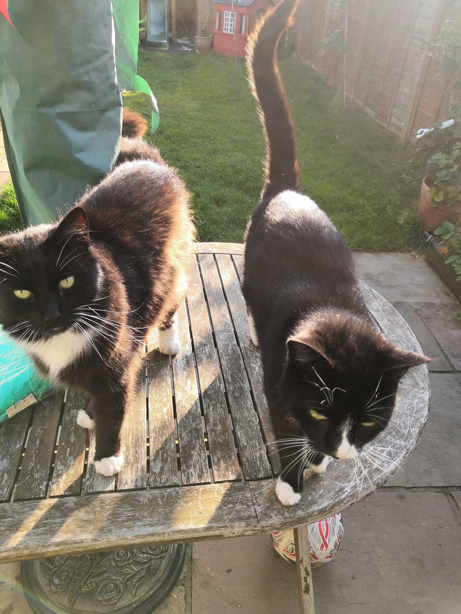

You contact me by phone or email. We will then arrange a time I can visit you and meet you and your cat(s). Due to costs of fuel and our wish to keep our price as low as possible for you by limiting the number of 'administrative' visits we make, we do require that you have the keys ready for me to collect at the consultation visit. At this visit I will also take instructions as to what your pet needs and other details. While you are away your cats are fed on the days you have booked. If you haven’t asked me to drop the keys back through your door, upon your safe return, your keys are returned. There is no charge for collecting or returning your keys the first time you use our services. If, after the first time you use our services, you feel that you would like to use us again in the future you may wish to consider allowing me to keep hold of your keys. Many of our customers do this and you can rest assured that keys are kept secure and identifiable only to me.
We will cat sit for houses based in these postcodes: SW15, SW18 and SW19 i.e. the Putney, Southfields Wimbledon areas. If your postcode is not listed, contact us to see if we will be able to cat sit for you.
Cost is £15 per visit- including on bank holidays! If you would like me to visit your cat twice a day the cost will be £25 per day. Phone or email to make a booking.
When I visit you, you can ask me to show you testimonials from satisfied customers whose cats I have looked after.
Should it be necessary, we can respond to emergency requests and visit your pet on the same day. We are quite flexible and generally require minimal notice.
I will collect your house keys at the initial consultation visit when and will return them when you are back home. I am fully insured - general public liability up to £1 million, though cover is limited to £5,000 for an animal lost or injured in my care, subject to an annual lmit of £10,000. I have not made any claims.
To keep you in touch with your beloved pet whilst you are away I shall send you a photo during my visit to let you know how they are. If you have any other questions, please feel free to contact us